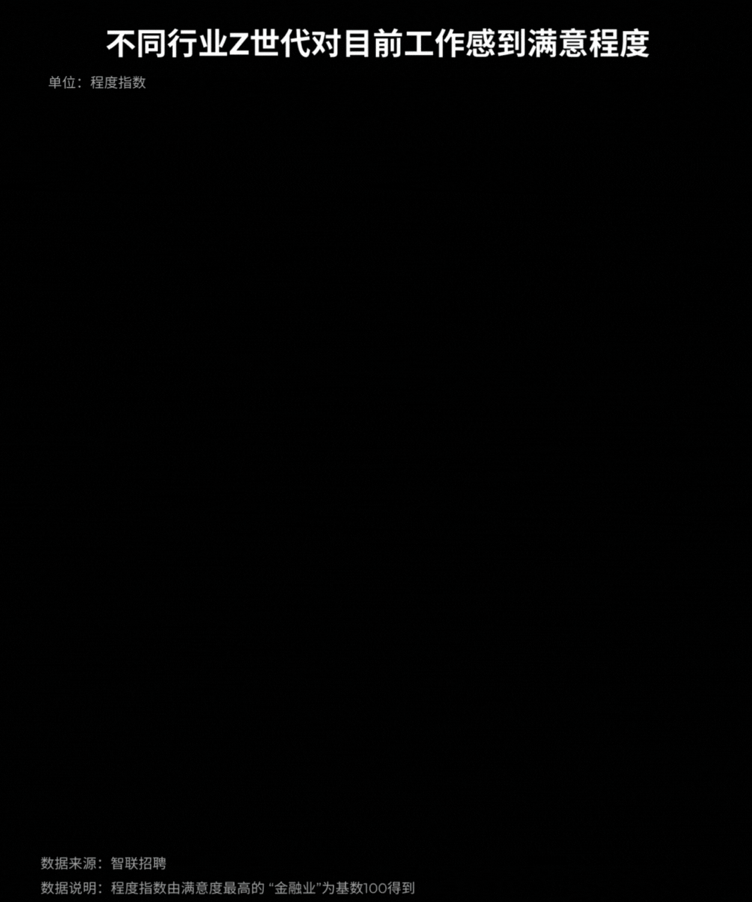

早晨七点半，建筑工地开工，李东一般会早到二十分钟。
李东今年52岁，干了近30年的木工。
“凭手艺吃饭讲究的就是一个勤快。”
他和工友们打着招呼，一起拿着工具走进施工现场。
工友们都是些老伙计，没有代沟。与电影里建筑工人普遍年轻力壮、孔武有力形成反差的是，在他的身边，中老年人才是主力，和他年龄相仿的中年人一抓一大把。
李东说，在工地上零星看到几个90后都觉得稀奇，00后更是看不见影。
合肥瑶海区的工程承包商钱弘术也有相同的感受，他的团队有二十多个工人，四十岁到五十岁的工人占八成，还有不少三十多岁的工人转行跑出租、进厂或是送外卖。
“现在的年轻人都不愿意进这个行业了。”
钱老板这几年开始为招工发愁，谁都希望有“新鲜血液”，但按现在的行情，他们这些承包商们都只招得到年纪稍大的工人。
诚然，建筑行业“老龄化”是不争的事实。据《中国劳动统计年鉴2022》数据显示，2021年40岁以上建筑业从业人数占行业总从业人数的57.7%，50岁以上建筑业从业人数占行业总从业人数的29.3%。另有文献数据显示，2007年建筑业一线作业人员平均年龄为33.2岁，2017年为43.1岁，10年时间，平均年龄增加了10岁。换句话说，10年来，几乎没有年轻人再进入这个行业。
10年前，35岁的他们在工地抛洒汗水；10年后，45岁的他们还在工地打拼。
01
浩浩荡荡“民工潮”，浇灌起中国高楼大厦
改革开放后，城市产业结构调整，大批农业剩余劳动力得以向二三产业和城镇转移。
数据显示，1989年中国农村共有2.7亿劳动力，而农业在精耕细作的基础上，亦只需1亿劳动力。1.7亿非农劳动力中，有8000万农民正面临乡镇企业发展下的“隐性失业”，离开农村、外出做工成为他们唯一的选择。在此背景下，“民工潮”拉开了序幕。
这批前往外地务工的农民工当中，年轻人是中流砥柱。李东在1995年跟亲戚一起去皖北地区当木工，据他回忆，老家巢湖市当时有不少人外出当装修工，没几个年轻小伙子留在村里种地。
根据社会科学院农村发展研究所针对全国11个省区93个村进行的调查结果，1986年外出农民工中，18岁至25岁的青年占到总数的60.1%。
城市发展需要大量建筑工人的支撑，而大多数工种技术含量低，属于体力活，对工人年龄、外貌、学历、技能等几乎没有什么限制，农民有个好身体，能“出大力”，正好与此相匹配。数据显示，1989年，北京市80%以上的建筑工人都是农民工。
李东曾在日记里写道：如今荒田不再稀奇，所有的青壮年眼光投向城市，哪怕在工地搬砖，做一个小工，也不愿回到老家，聊起种田总会说在外一天能买一个月的口粮。
李东所说不虚，90年代初期，江苏省农委政策研究处副处长孙国贵曾说，由于插秧、收割机械没有解决，在江南水乡，一个强劳力至多只能种5亩田，1亩田纯收入100元，一年才收入500元。而同时期，一个强劳动力外出打工的年收入可以达到2000-3000元。
城市化的列车带着“李东们”狂飙突进，农民工的工资也跟着水涨船高。近20年来，在农民工较易进入的行业中，建筑业当属性价比“最高”的行业。数据显示，农民务工收入呈现逐年上涨趋势，2022年城镇私营单位中，建筑业年平均工资为60918元，高于农林牧渔业的42605元；同时高于住宿和餐饮行业、批发和零售业，房地产业等八个行业。
在过去的20年甚至40年间，每个城市都在大兴土木，铁路穿越雪域高原，高桥横跨天堑南北。中国一代代的建筑人用脊梁扛起了中国发展的步伐，中国的发展也带动着建筑业一路向前。
然而，跟随中国发展的不仅仅有建筑业，还有不断涌现的新兴产业。现今，以房地产为代表的产业褪去最耀眼的光环，它所带来的艰辛“高薪”，不再是“最高”性价比。
最先逃离的，是有着更多选择的年轻人。
02
90后，宁肯进厂打螺丝，不想爬楼挣高薪
“夏天高温的时候在工地上干活很晒，容易中暑。”今年年初，90后建筑人舒洋选择离开工地。
舒洋今年30岁，他从16岁开始就在工地上建大楼，本来准备“一辈子都干这个”。但坚持了10多年，他最终选择走下脚手架，与曾热爱的工作挥手作别。
新工作并不好找，还得“托关系”。过完年后，舒洋在朋友的介绍下去了一家工装阀门厂上班，主要负责工艺流程中的抛丸工作。一周工作六天休息一天，一天8小时，一个月工资6000元左右，干久了可以拿到7000-8000元，公积金另交。“我之前在工地做钢筋工，一个月能拿一万出头。”当被问及是否还会回到工地时，舒洋摇了摇头，“对我来说，在工厂里上班比较稳定，工厂按月发工资，还不用担心没活干。”
苦与累，实际上并非一朝一夕，促使他离开的最后一根稻草，是工资拖欠问题。舒洋去年在一个外包工程的工地上干活，腊月二十九去找负责人结工资，只拿到60%的工资，剩下的40%要等今年5月份再看。工头说，如果5月份无法结清，要等到8月15日尽量结清。舒洋说完这件事后，长叹了一口气。
2022年《调研世界》第12期刊登了一篇学术论文——《行业比较视角下建筑业农民工择业影响因素研究——来自CLDS微观数据的证据》，其中相关研究数据显示，建筑业农民工的职工医疗保险和退休金制度比制造业农民工的享有率更低，被拖欠工资的概率也相对更高。
可以说，工资拖欠问题是当前建筑行业的一大痛点，尽管政府出台了一系列政策来保护建筑工人的权益，但在落实上仍存在问题。当建筑业工人的需求难以被满足，付出劳动所应得的工资难以被保障时，不仅会降低行业内工人的幸福感，也很难再吸纳更多的新鲜血液。
2022年，中国从事建筑业的农民工比重为17.7%，比上年下降1.3个百分点。建筑业行业内工人的流失与行业外年轻人不愿进，不仅仅因为工资拖欠。
“不可否认，工地的工作强度大、压力大，脏累，工作辛苦又不体面。”包工头钱弘术表示，现在工地上的年轻工人多集中在大型机械操作等有技术要求的工种，传统瓦、水电和木班组工人普遍年纪较大，但在一定程度上，技术工种也缺乏吸引力，“年轻人如果学技术工，前期需要投入的时间和精力成本很高，这一点就‘劝退’了很多准备从事技术工种的年轻人。”
随着经济模式发展变迁，物流、中介、餐饮、文娱等相关城市新兴产业不断涌现，大量新型劳务及轻体力劳动岗位的产生拓宽了年轻一代的职业选择空间。
此外，建筑业的科技发展也让密集产业不那么“密集”。目前，部分工地正在应用3D打印技术，模块化和预制化生产大大减少了工地需要的劳动力数量。一些年轻建筑人早已经成为“灰领”甚至“白领”，不再是工地上“吃大苦、受大累”的蓝领，这也在一定程度上让建筑业的变老“肉眼可见”。
03
中国建筑业如何引来“新鲜血液”？
对于未来建筑业可能面临的境况，钱弘术有些担忧：“未来10年或者15年，建筑业‘用工荒’‘招工难’问题可能会到达顶峰。”
业内专家认为，现在建筑业的主力军是40-50岁群体，多年之后，这群主力军可能会由于年龄问题或身体问题不干建筑业了，但此时的建筑业严重缺乏能补上来的年轻群体。当一线工人严重不足时，建筑业已处于极度被动的位置。
日前，我国经济已由高速增长阶段转向高质量发展阶段，正处于转变发展方式、优化经济结构、转换增长动力的关键时期。建筑业作为经济发展阵地的支撑产业，如何引来“新鲜血液”对其进一步发展至关重要。
尝试去理解年轻人的择业心理，针对性解决行业现存问题，才能留住行业内的他们，吸纳行业外的他们。2021年9月，智联招聘发布《2021Z世代职场现状与趋势调研报告》（Z世代通常是指1995年至2009年出生的一代人），对Z世代的职业追求给出了清晰画像：在求职因素方面，Z世代对福利待遇的看重程度明显高于前辈们，工作环境和个人成长逐渐成为Z世代人群考量职业的重要因素。
除了吃穿住等基本条件外，Z世代对工作强度、加班时长、办公环境等因素的重视明显高于95前群体。数据显示，房地产/建筑业的Z世代对工作感到满意的比例仅占21.1%，劳动强度大、工作时间长、工作环境差，都是导致行业内年轻人“退场”的重要因素，也是阻碍行业外年轻人进入建筑业的大山。另外，权益保障也是年轻人不愿进建筑业的一大潜在动因。只有在基础保障上绵绵用力、久久为功，年轻人的职业归属感和幸福感才能得以提升。
如今，“个人成长”成为越来越多年轻人选择职业时的重要考量因素，47.0%的95后认为“公司提供很多学习机会，能够在工作中学到新技能，不断提升自我”对其有吸引力。对此，建筑行业应建立健全产业工人培训、培养、管理和激励制度，拓宽成才空间，促进建筑工人走向职业化。行业生态不断规范化，不仅能提升建筑行业的社会认同度，也能让年轻人感到建筑业是有价值有前途的行业。
当建筑工人成为一个有安全感、价值感和成就感的职业，自然会吸引越来越多的年轻人加入，建筑行业后继乏人的窘境也能因此得以破除。
（文中受访者均为化名，感谢所有受访者）